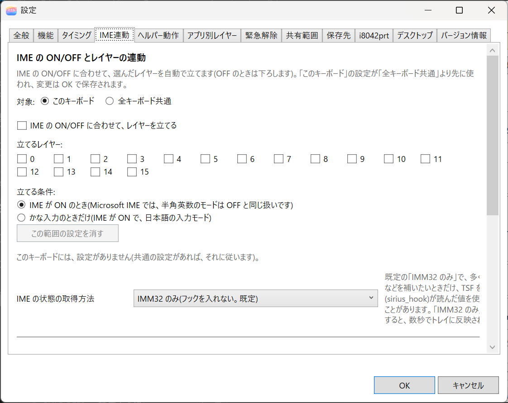
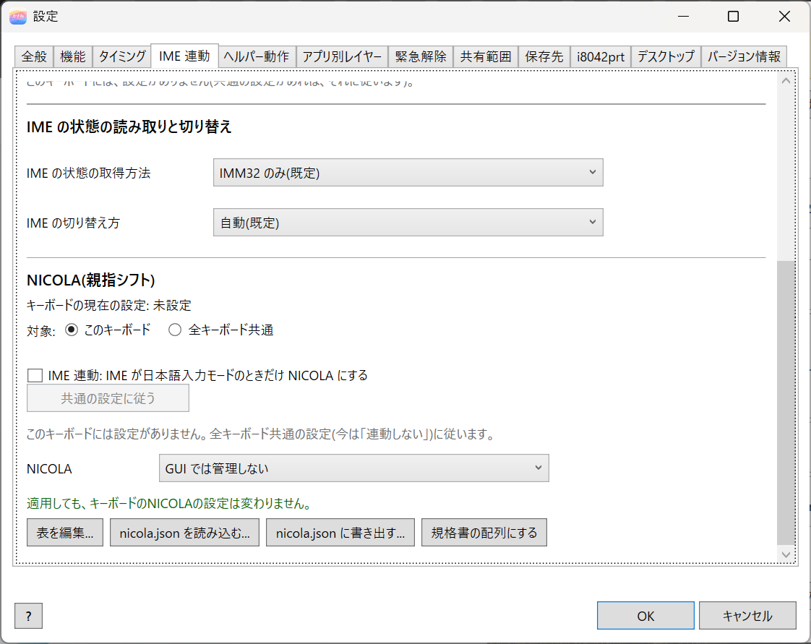
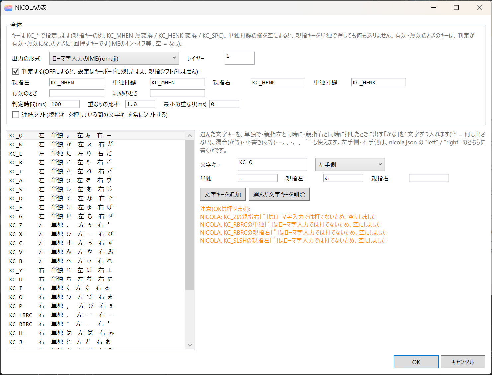

10. IME 連動とNICOLA
設定ダイアログの IME 連動 タブでは、日本語入力（IME）の状態に合わせて、レイヤーや親指シフト（NICOLA）を自動で切り替えます。

タブの上の部分が、IME に合わせたレイヤーの切り替えです。下の部分が、NICOLA（親指シフト）です。以前の「NICOLA」タブの内容も、このタブにまとまっています。
どちらも、トレイの kasane が動いているときだけ働きます。
IME に合わせてレイヤーを切り替える
IME の ON と OFF に合わせて、選んだレイヤーを自動で有効にします。IME が OFF になると、無効にします。NICOLA を使わなくても使えます。
| 項目 | 内容 |
|---|---|
| 対象 | このキーボード と 全キーボード共通 から選ぶ。キーボードごとの設定が先。「このキーボード」で連動しない設定にすると、共通の設定があっても、そのキーボードは連動しない |
| IME の ON/OFF に合わせて、レイヤーを有効にする | チェックを付けると、連動する |
| 有効にするレイヤー | 有効にするレイヤー（0〜15 のチェックボックス）。1 つ以上 |
| 有効にする条件 | IME が ON のとき（Microsoft IME では、半角英数のモードは OFF と同じ扱い）、または 日本語入力モードのときだけ（IME が ON で、半角英数ではないとき。ローマ字入力かかな入力かは区別しない） |
| この範囲の設定を消す | 選んでいる対象の設定を消す。そのキーボードに設定がないときは、共通の設定に従う |
有効にしたレイヤーは、キーボード側の TG などのレイヤーと、OR で重なります。
前面のウィンドウの IME の状態が取れないとき（管理者として動いているウィンドウなど）は、直前の状態を保ちます。
IME の状態の取得方法
IME の状態を読む方法を、IME の状態の取得方法 で選びます。IME 連動のほか、ヘルパー動作の IME 操作（IME の ON/OFF）も、この方法で状態を読みます。
| 方法 | 内容 |
|---|---|
| IMM32 のみ(既定) | Windows の標準の方法で読む。追加の DLL は入れない |
| IMM32 を先に、取れなければ TSF | IMM32 で取れないときだけ、Text Services Framework（TSF）でも読む。全アプリに小さな DLL（天狼 sirius のフック）が入る |
| TSF を先に、取れなければ IMM32 | TSF を先に読み、取れないときは IMM32 で読む。DLL が入るのは上と同じ |
IMM32 では、次のアプリで状態が取れないか、追従しません。そのようなアプリが前面のときは、直前の状態を保ちます。
- 管理者として動くウィンドウ
- 設定アプリなど、一部のストアアプリ（値が固定されている）
- 新しいメモ帳（ON が読めないことがある）
TSF を含む方法を選ぶと、IME 連動を使っていなくても DLL が入ります。Explorer を開くのが遅く感じられる場合があります。原因は特定できていません。32 ビットのアプリと、ARM64 ネイティブのアプリには、この DLL は入りません。使う必要がなければ、既定の「IMM32 のみ」のままにしてください。
IME の切り替え方
ヘルパー動作で IME を ON/OFF にする方法を、IME の切り替え方 で選びます。ime の手順と、文字列の入力の「入力の間だけ IME を OFF」に効きます。IME 連動（レイヤーを有効にする・無効にする）には関係しません。
| 選択 | 内容 |
|---|---|
| 自動(既定) | ふだんは IMM32 で切り替える。トレイが管理者として動いているときは、ドライバ経由で Alt+半角/全角を送る |
| IME オン / オフ キー | ON 用と OFF 用のキーを送る。日本語キーボードの配列で使える |
| 変換 / 無変換 | 変換で ON、無変換で OFF にする。Microsoft IME の「キーとタッチのカスタマイズ」で、変換に IME-オン、無変換に IME-オフを割り当ててから選ぶ。割り当てないと、変換が再変換として働く |
| Alt+半角/全角で切り替え | 押すたびに入れ替わるキーを送る。今の状態を読めないアプリでは送らない |
| IMM32 | キーを送らない |
詳しい動きは ヘルパー動作とアプリ別レイヤー にあります。
NICOLA（親指シフト）
親指シフトを使う設定です。IME 連動のタブを下へスクロールした部分にあります。

- 対象 で、このキーボード か 全キーボード共通 を選びます。
- NICOLA の欄で この設定を使う を選ぶと、NICOLA の規格書どおりの配列が入ります。あとから規格書の配列に戻すには、規格書の配列にする を押します。GUI では管理しない（ドライバの設定をそのまま使う） のままなら、コマンド版（
--set-nicola）で入れた設定は、適用しても変わりません。 - 必要なら、表を編集... で配列を変えます。nicola.json を読み込む... と nicola.json に書き出す... で、ファイルとの入出力もできます。
- キーボードに適用(ON) を押します。
表を編集する
表を編集... で、「NICOLAの表」の画面が開きます。上の「全体」の部分と、下の文字キーの一覧で、次の項目を変えられます。

- 出力の形式: IME の入力方式（ローマ字入力の IME、または JIS かな）と、レイヤー
- 判定する: OFF にすると、設定はキーボードに残したまま、親指シフトをしません
- 親指左、親指右、それぞれの 単独打鍵 のキー（例:
KC_MHEN、KC_HENK）。単独打鍵の欄を空にすると、親指キーを単独で押しても、何も送りません。 - 有効のとき、無効のとき: 判定が有効または無効になったときに、1 回押すキー（IME のオンとオフなど。空は、なし）
- 判定時間(ms)、重なりの比率、最小の重なり(ms)
- 連続シフト: 親指キーを押している間の文字キーを、常にシフトします
- 下の一覧: 各文字キーを、単独、親指左、親指右と同時に押したときに出る、かな（1 文字ずつ。空なら何も出しません）。濁音（が など）、小書き（ぁ など）、ー。、・，．゛゜ も使えます。左手側、右手側 は、
nicola.jsonの"left"と"right"の、どちらに書くかです。文字キーを追加、選んだ文字キーを削除 で、一覧を増減できます。複製 は、選んだ行のかなを写した行を、すぐ下に足します（同じ文字キーは 2 行に書けないので、文字キーは空になります）。文字キーの欄は、押して入力 と 選ぶ... でも入れられます。
nicola.json（コマンド版と同じ形式）の読み込みと書き出しもできます。
IME 連動（NICOLA）
IME 連動: IME が日本語入力モードのときだけ NICOLA にする にチェックを付けると、IME が日本語入力モード（ひらがな、カタカナ）のときだけ、トレイの kasane が、NICOLA のレイヤーを自動で有効にします。半角英数のモードのときは、IME が ON でも有効にしません。ローマ字入力かかな入力かは区別しないので、どちらの IME でも使えます。切り替えるキーは要りません。既定はオフです。
- 止めたいときは、チェックを外します。
- 対象が このキーボード のときは、そのキーボードだけの設定になります。キーボードごとの設定がないときは、全キーボード共通 の設定に従います。共通の設定に従う を押すと、キーボードごとの設定を消せます。
- 使わないときは、NICOLA のレイヤー（既定はレイヤー 1）に切り替えるキー（例:
TG(1)）を、キーマップに置きます。 - 一度チェックを入れたあとは、その選択が残ります。再インストールでも変わりません。
- IME 連動をオンにして、NICOLA を設定したキーボードで IME を ON にすると、0.1 秒ほどあとに NICOLA に切り替わり、トレイのアイコンのツールチップが「NICOLA 入力中」になります。IME を OFF（半角英数）にすると、ふつうのキーに戻ります。
親指キーの単独打鍵（thumbLeftTap、thumbRightTap。Enter や Space など）は、適用のときに、NICOLA のレイヤーのキー割り当てとして自動で足されます。Ctrl や Shift を押している間は、NICOLA の判定が行われず、この割り当てが使われます。キー割り当てが 1 つもなくても、NICOLA は動きます。
例: 無変換と変換を Enter と Space にする
親指シフトの親指キーに、無変換と変換を使い、IME に合わせて切り替える例です。
| 操作 | 動作 |
|---|---|
| 無変換が親指左、変換が親指右 | 文字キーとの同時打鍵で、規格どおりの文字 |
| IME が OFF のとき、無変換を単独で押す | IME が ON になる（手順 2 の Windows の設定） |
| IME が ON のとき、無変換を単独で押す | Enter |
| IME が ON のとき、変換を単独で押す | Space |
| Ctrl や Shift を押しながら無変換、変換 | Ctrl+Enter、Shift+Space など |
- NICOLA の部分で この設定を使う を選び、nicola.json を読み込む... で、インストール先の
samples\nicola-enter-space.jsonを選びます。親指キーの単独打鍵が Enter と Space になります。JIS かな入力のときは、表を編集... で、IME の入力方式を合わせます。IME 連動 にチェックが入っていることを確かめて、OK を押します。 - Windows の設定で、無変換キーを「IME-オン」にします（Microsoft IME の「キーとタッチのカスタマイズ」。画面の名前は、Windows の版で少し違います）。IME が OFF のときは NICOLA が働かないので、無変換が IME に届いて、IME が ON になります。変換キーも「IME-オン」になっている場合は、「変換」に戻しておくと、変換を変換のまま使えます。
- キーボードに適用(ON) を押します。
- トレイの kasane が動いていることを確かめます。
親指キーの単独打鍵は、同時打鍵の判定時間（既定は 100ms）が過ぎるか、離したときに確定します。